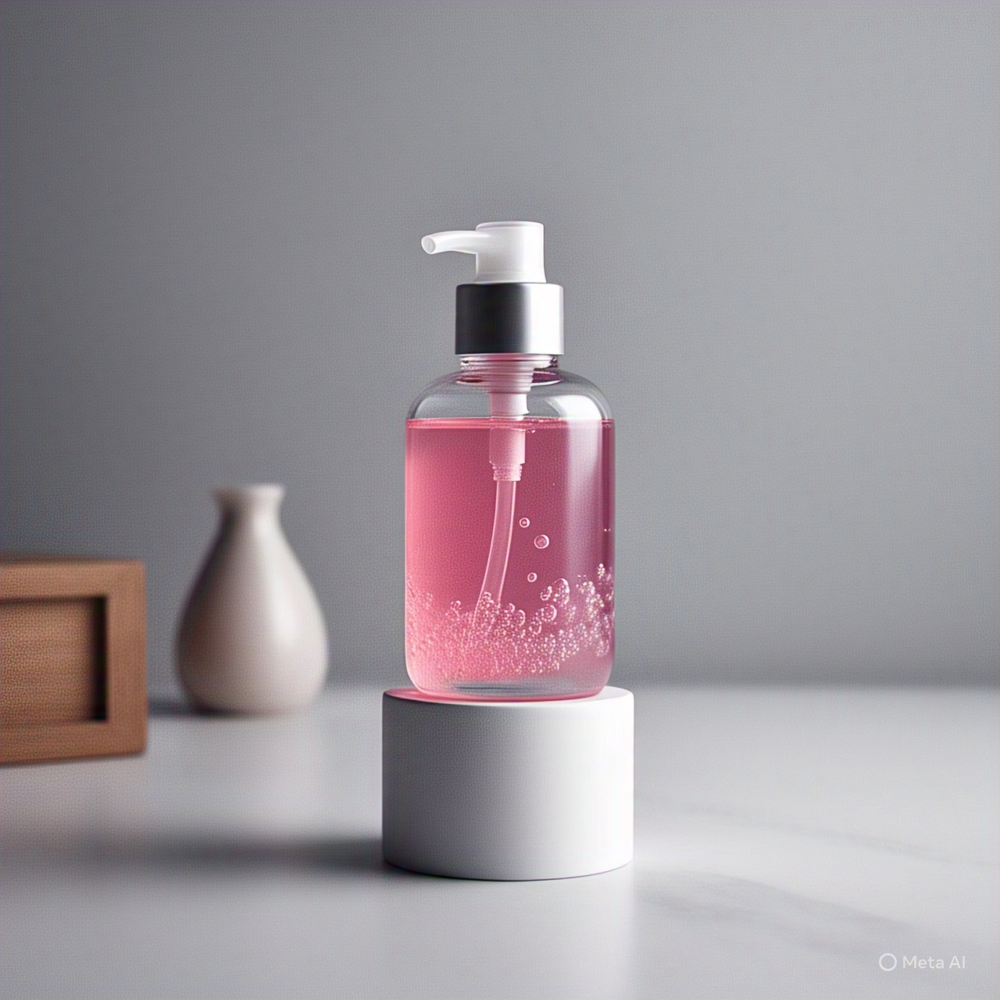
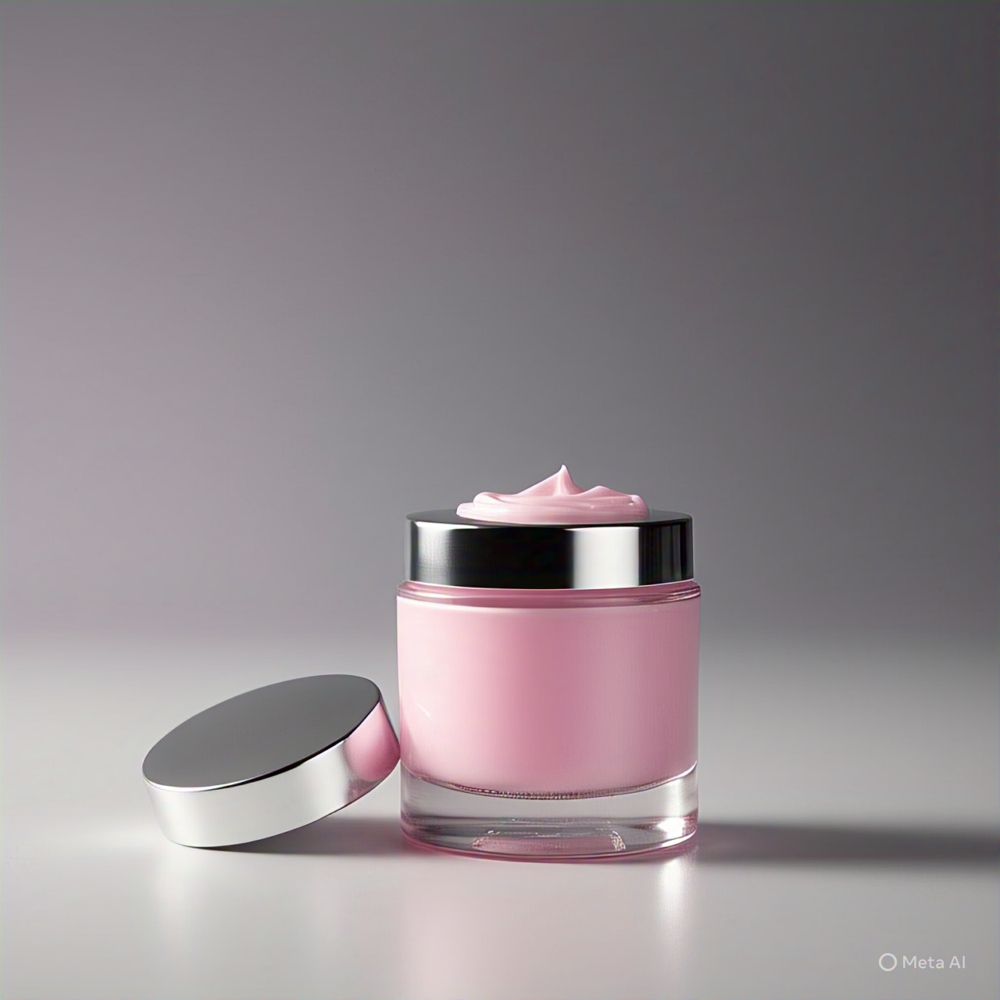
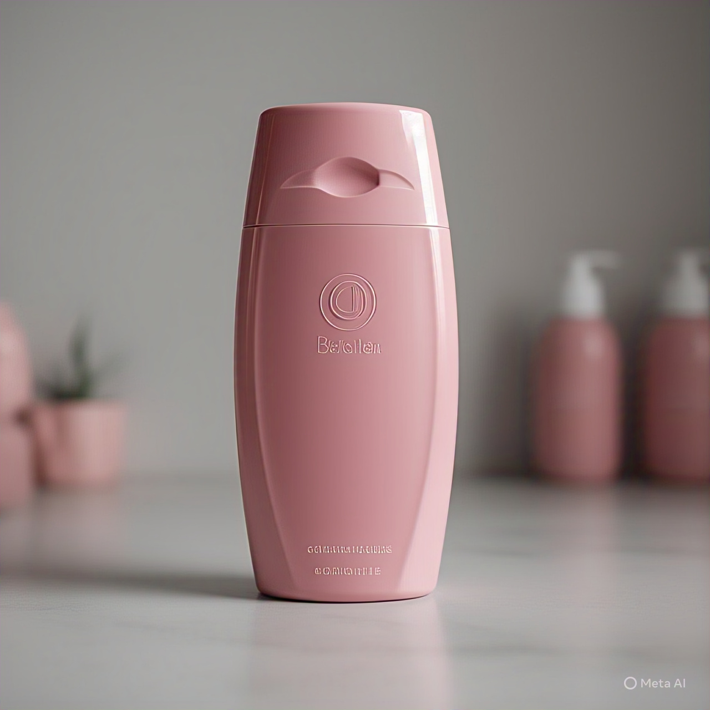

Un evento pensado para ti
Marla Soap tiene el honor de invitarte a un evento único, con el lanzamiento internacional de
nuestro producto. Donde la elegancia, la innovación y el cuidado natural se fusionan en nuevo jabón
premium, elaborado con ingredientes de la más alta calidad y pensado para transformar el cuidado
diario en un ritual de bienestar.
Fecha: Viernes 23 de Mayo de 2025
Hora: 8 P.M Col
Lugar: Auditorio Santa Rita

Jabon en barra

jabon liquido

crema corporal

shampoo
Beneficios
Marla Soap es un jabón 100% natural, elaborado con ingredientes de origen vegetal, libre de químicos
agresivos, parabenos y sulfatos. Su fórmula hipoalergénica es ideal para pieles sensibles, mientras
que su aroma a base de aceites esenciales ofrece una experiencia refrescante. Hidratante y
biodegradable, está enriquecido con manteca de karité y aceite de coco. Cada barra es hecha a mano,
no se testa en animales,
¿Por qué elegirnos?
En Marla Soap creemos que el cuidado de tu piel no debería comprometer tu salud ni la del planeta.
Nos diferenciamos por ofrecer un jabón 100% natural, libre de químicos agresivos, con ingredientes
de alta calidad y una elaboración artesanal que garantiza pureza, suavidad y respeto por el medio
ambiente. No solo cuidamos tu piel, creamos una experiencia que transforma tu rutina diaria en un
momento de bienestar real.